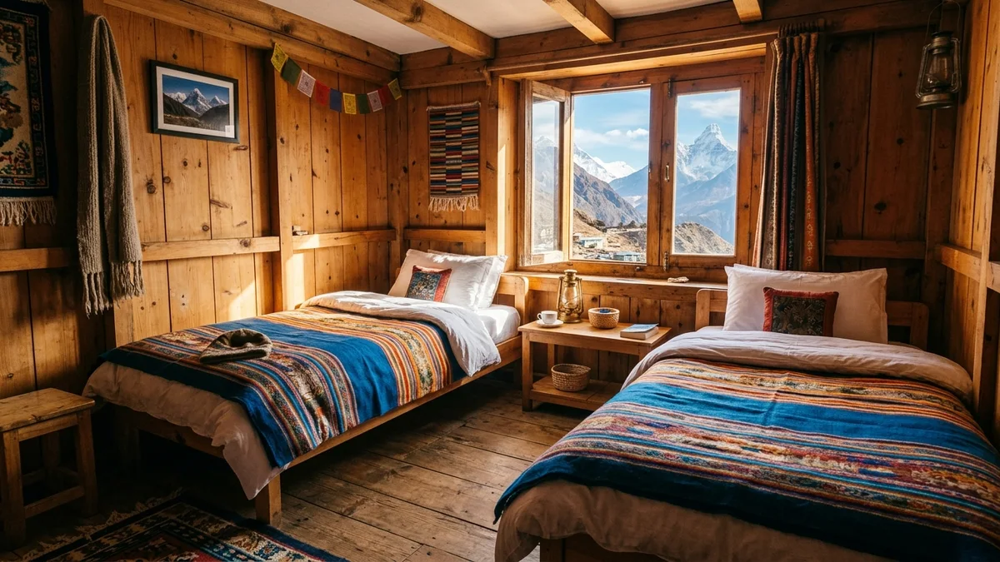
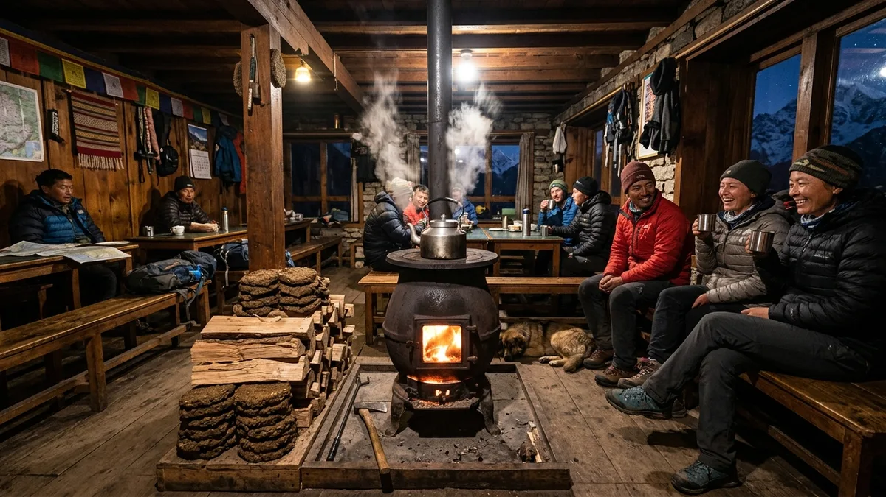
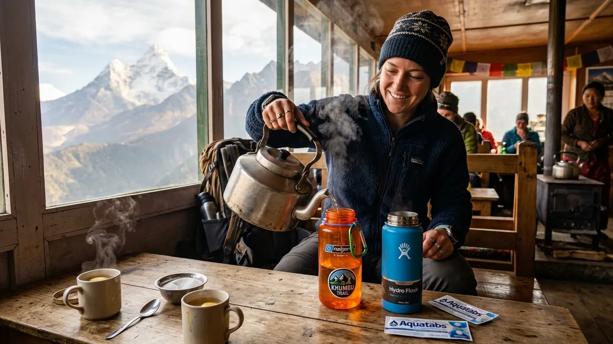
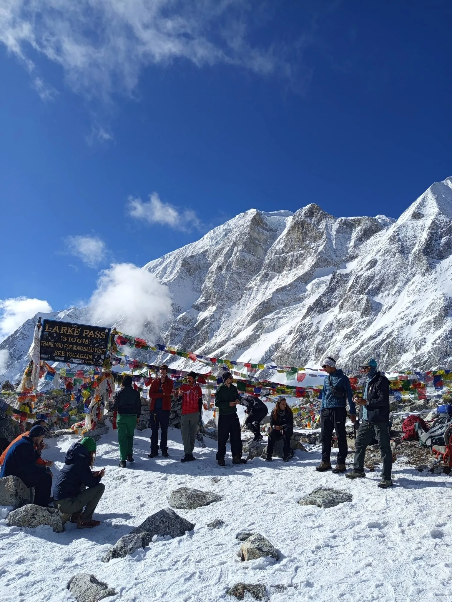

1. The Evolution of Manaslu Teahouses: From Tented Expeditions to Thriving Community Lodges

For decades after its official opening in 1992, the Manaslu Circuit Trek was strictly a camping-only expedition. Trekkers were forced to hire large support crews consisting of sirdars, camp cooks, kitchen assistants, and long mule trains laden with kerosene stoves, dining tents, and weeks of canned food supplies.
Between 2010 and 2015, visionary local community leaders across the Gorkha district invested heavily in rural tourism infrastructure. Following the devastating 2015 earthquake, villages rebuilt with improved seismic-resistant timber, stone masonry, and solar technologies. Today, the Manaslu Circuit is a complete, 100% teahouse trek.
In every village along the route—from the subtropical river canyons of Machha Khola and Jagat to the high Tibetan borderlands of Samagaon, Samdo, and Dharamsala—you will find warm, family-operated lodges (known locally as bhattis or teahouses). While simpler and less commercialized than the luxury lodges of Everest, Manaslu’s teahouses offer an authentic, heartwarming immersion into high-altitude mountain life.
2. Teahouse Standards & Room Amenities: Twin Beds, Plywood Walls & Sleeping Warmth

Setting realistic expectations about your sleeping quarters is essential to enjoying the trail. Teahouses in the Himalayas are designed for basic shelter and functional recovery, not five-star luxury.
Room Structure and Layout
Nearly all rooms along the circuit are twin-share bedrooms featuring two single wooden bed frames:
- Beds & Mattresses: Each bed is fitted with a 3 to 4-inch high-density foam mattress, a pillow, and a cotton sheet. Lodges also provide a thick quilt or blanket.
- Plywood Partition Walls: Interior walls are constructed from thin plywood sheets. Sound travels freely between rooms—you will hear your neighbors whispering, coughing, packing zippers, and setting early morning alarms. High-grade silicone earplugs are an absolute travel essential.
- Furniture: Rooms are minimalist. Beyond the beds, you will typically find a small wooden side table, a window with curtains, and wall hooks to hang jackets. There are no electrical outlets inside standard rooms.
Why a -15°C to -20°C Sleeping Bag is Mandatory
Teahouse bedrooms in Nepal are completely unheated. At mid-elevations like Namrung and Lho (2,600m–3,180m), indoor temperatures hover near freezing. At Samagaon, Samdo, and Dharamsala (3,530m–4,460m), room temperatures regularly drop to between -5°C and -15°C at night. Teahouse quilts are often drafty and unwashed. You must bring a 4-season down sleeping bag with a comfort rating of -15°C to -20°C to ensure restful, restorative sleep.
3. The Dharamsala Reality (4,460m): Navigating the High Camp Bottleneck Before Larkya La Pass
Every trekker on the circuit must spend the night before crossing Larkya La Pass at Dharamsala (also known as Larkya Phedi at 4,460m / 14,632ft). It is crucial to understand that Dharamsala is not a traditional village—it is a remote, seasonal high-altitude transit station with limited capacity.
The Living Conditions at Dharamsala
Because construction materials must be portered up the glacial moraine by yaks, infrastructure at Dharamsala is primitive:
- Room Accommodations: Accommodation consists of rustic stone huts, basic plywood barracks, and prefabricated modular rooms. During peak autumn season (October–November), high demand means trekkers frequently sleep in multi-bed dormitory rooms (4 to 8 beds per room).
- Sub-Zero Conditions: High mountain winds howl off the Larkya Glacier, and interior room temperatures drop to -15°C. Water in buckets freezes solid by 7:00 PM.
- No Hot Showers or Running Water: There is zero running water. Water for washing hands and flushing squat toilets is stored in outdoor plastic barrels with ice crusts.
- Early Sleep Schedule: Dinner is served at 5:30 PM, and the dining room shuts down by 8:00 PM. Wake-up calls take place at 3:30 AM for a 4:30 AM headlamp departure over the pass.
The Benefit of Guided Agency Bookings
Because Dharamsala has fewer than 100 total beds, independent trekkers without advanced reservations often find themselves sleeping on dining hall benches. Reputable agencies like Igloo Himalaya Treks have senior guides who send porters ahead from Samdo to physically secure private rooms before afternoon arrivals.
4. Bathroom, Toilet & Hot Shower Realities: Squat Toilets, Solar Geysers & Freezing Pipes
Sanitary facilities change dramatically as you ascend from the subtropical river canyons to the high alpine scree.
Toilet Facilities: Squat vs. Western Flush
| Trail Elevation Zone | Typical Toilet Setup | Sanitation Reality & Tips |
|---|---|---|
| Lower Valley (Soti Khola to Jagat / 700m–1,340m) |
Western flush toilets & tiled squat toilets | Running water; attached bathrooms available in select upgraded lodges; toilet paper must be binned, not flushed. |
| Mid-Elevation Nubri (Deng to Samagaon / 1,800m–3,530m) |
Shared squat toilets down the hall or in outhouse | Manual flush via water bucket and plastic pitcher; bring your own toilet paper and hand sanitizer. |
| High Alpine Camps (Samdo to Dharamsala / 3,875m–4,460m) |
Basic wooden squat booths & pit latrines | Freezing temperatures freeze water pipes; manual bucket flush or dry pit latrines; carry headlamp for night visits. |
Hot Showers and Personal Hygiene
- Solar and Gas Geyser Showers: Available up to Samagaon for a fee of NPR 300 to 500 (~$2 to $4 USD). On cloudy or snowy afternoons, solar showers fail, and lodges utilize gas-bottle heaters or bucket hot water heated over the kitchen stove.
- The Wet-Wipe Rule Above 3,500m: Above Samagaon, stripping down in drafty unheated shower stalls carries severe risks of hypothermia and bronchitis (the famous "Khumbu Cough"). Experienced trekkers stop taking wet showers above 3,500m and rely on warm water washbowls and biodegradable wet wipes until descending to Bimthang.
5. The Evening Dining Hall Experience: Bukhari Fireplaces, Social Life & Teahouse Etiquette

The dining hall is the beating heart of every Himalayan teahouse. After hiking for 6 to 7 hours in crisp mountain air, stepping into the warm, lively dining room at 4:00 PM is one of the greatest pleasures of trekking in Nepal.
The Legendary Bukhari Stove
At the center of every dining hall sits a large, cylindrical cast-iron stove known as a bukhari. Around 4:30 PM, the lodge owner lights the fire:
- Lower Valleys: The stove is fueled by sustainably collected firewood.
- High Alpine Valleys (Samagaon, Samdo, Dharamsala): Because trees cannot grow above the sub-alpine zone, the bukhari is fueled by dried yak dung! Dried yak dung burns clean, hot, and completely odorless, generating immense radiant heat that warms the entire room.
- Drying Your Gear: Trekkers hang damp trekking socks, boot liners, and gloves on the perimeter drying racks surrounding the stove pipe.
Essential Dining Room Etiquette
- Order Early: Lodge kitchens cook each meal fresh to order on small two-burner gas hobs. Place your dinner order by 5:30 PM to avoid long waits during the peak 6:30 PM dining rush.
- Order Breakfast the Night Before: Before going to sleep, write down your breakfast choice and exact morning departure time in your guide's logbook so your meal is hot and waiting when you wake up.
- Support Your Lodge Host: Room rates are subsidized ($4–$8 per night) on the strict condition that you eat dinner and breakfast at that same teahouse. Eating elsewhere and only sleeping in the room is considered offensive and results in heavy room surcharges.
6. The King of Himalayan Fuel: Authentic Dal Bhat Power & Unlimited Refills

Ask any Sherpa guide or seasoned Himalayan trekker what fuels their footsteps, and they will give you a unanimous three-word answer: "Dal Bhat Power!"
Served twice daily across Nepal, Dal Bhat Tarkari is a complete, balanced nutritional powerhouse consisting of:
- Bhat: A mountain-sized mound of steamed white or brown rice providing rapid complex carbohydrates.
- Dal: A piping-hot bowl of seasoned yellow or black lentil soup rich in plant-based proteins, iron, and potassium.
- Tarkari: Curried seasonal mountain vegetables (potatoes, cauliflower, cabbage, peas, and green beans) cooked with turmeric, cumin, and garlic.
- Saag: Freshly sautéed mustard greens or spinach providing essential dietary fiber and vitamins.
- Achar: Spicy tomato and chili pickle stimulating appetite and digestion at altitude.
The Sacred Rule of Free Refills
Unlike Western dishes (pizza, pasta, burgers) which are served as fixed single portions, Dal Bhat comes with unlimited free refills. As you eat, the lodge host will circle the dining room with pots of steaming rice, hot dal, and vegetable curry, refilling your plate until you raise your hands in surrender! There is no better value or more nutritious recovery meal on the planet.
8. The Strict Vegetarian Rule Above Namrung: Avoiding Meat Hazards in Buddhist Nubri
One of the most crucial health and cultural guidelines on the Manaslu Circuit is adhering to a strict vegetarian diet above Namrung village (2,660m).
The Spiritual Principle: Tsum & Nubri Non-Violence (Ahimsa)
The upper valleys of Manaslu—specifically Nubri and Tsum—are sacred Buddhist sanctuaries declared as ahimsa (non-violence) zones centuries ago. Under strict religious edicts enforced by local lamas, the slaughter of any living animal (yaks, goats, chickens, or sheep) is strictly outlawed.
The Severe Health Risk of Unrefrigerated Meat
Because local slaughter is forbidden and there is no municipal electric grid for refrigeration, any meat served in high teahouses (chicken, pork, or buffalo sausages) must be:
- Purchased in the lowlands or Kathmandu.
- Carried in open burlap sacks on the backs of mules or porters for 5 to 7 consecutive days in warm subtropical sun.
- Stored in unrefrigerated teahouse larders at high camps.
Consuming unrefrigerated meat under these conditions carries catastrophic risks of bacterial gastroenteritis, salmonella, and amoebic dysentery. Contracting food poisoning at 4,000 meters severely accelerates dehydration and altitude sickness. Stick 100% to vegetarian meals above Namrung to keep your digestion bulletproof!
9. Nubri & Tibetan Mountain Delicacies: Buckwheat Bread, Yak Cheese & Butter Tea (Gur Gur Cha)
As you ascend into Nubri (Lho, Shyala, Samagaon, and Samdo), the cultural identity shifts entirely to Tibetan Buddhism. Teahouse menus begin showcasing unique local mountain delicacies:
1. Fresh Alpine Yak Cheese (Chhurpi)
Samagaon and Samdo maintain large herds of yaks that graze in high alpine summer pastures up to 4,800m. Local herders produce rich, nutty, golden wheels of semi-hard yak cheese. You can order thick slices of melted yak cheese over macaroni, pizza, or potato rosti, or buy chunks to snack on while hiking.
2. Tibetan Salt-Butter Tea (Gur Gur Cha)
Prepared by churning strong black tea leaves with rich yak butter, hot water, and Himalayan rock salt in a wooden cylinder. While the salty, savory flavor surprises western palates expecting sweet milk tea, Gur Gur Cha is an incredible mountaineering drink: the fats prevent chapped lips, soothe sore throats, and deliver instant thermogenic calories in sub-zero winds.
3. Buckwheat Flatbread (Dhepu / Roti)
Buckwheat is one of the few resilient grains that thrives in the rocky soil of Samagaon. Freshly ground buckwheat flour is mixed with water and pan-baked on stone griddles into hearty, earthy flatbreads served with wild honey or fiery chili paste (khursani).
10. Safe Hydration Protocols: Boiled Water, UV Purification & The Nalgene Bed-Warmer Trick

At high altitudes, low humidity and hyperventilation cause your body to expel moisture twice as fast as at sea level. Drinking 4 to 5 liters of safe, purified fluid per day is your primary medical defense against Acute Mountain Sickness (AMS).
Three Ways to Secure Safe Water on Trail
- Boiled Water from Teahouses (Safest & Warmest): Every lodge sells boiled drinking water for NPR 150 to 300 per liter. Because it is boiled over the stove, it is 100% sterile and warm to drink.
- UV SteriPEN Purification: Carry a rechargeable UV SteriPEN. Stirring the UV lamp in a 1-liter bottle of clear tap water for 90 seconds destroys 99.9% of bacteria, viruses, and protozoa without altering taste.
- Chemical Purification Tablets: Chlorine dioxide tablets (Aquatabs / Katadyn Micropur) are lightweight and reliable. Drop one tablet into cold tap water and wait 30 minutes before drinking.
The Legendary Nalgene Bed-Warmer Technique
Every evening before going to bed, order 1 liter of boiling water in your wide-mouth Nalgene bottle. Ensure the cap is tightly sealed, slip it into an insulated thermal sleeve or wool sock, and slide it down into the foot of your sleeping bag! It functions as a radiant personal heater that keeps your feet toasty through the sub-zero night. By morning, you have a liter of clean, room-temperature drinking water ready for the trail.
11. Electricity, Device Charging & Solar Power Limitations: Fees, Outages & Power Bank Strategies
Managing battery power across a 14-day Himalayan trek requires careful planning. Most villages along the Manaslu Circuit operate off decentralized micro-hydro or small solar-battery arrays.
Device Charging Rates
Because electricity is scarce, lodge owners charge a nominal fee to plug devices into the communal charging strip in the dining hall:
- Smartphones: NPR 300 to 400 (~$2.50 to $3 USD) per full charge.
- Power Banks (10,000–20,000 mAh): NPR 500 to 800 (~$4 to $6 USD) per full charge.
- Camera Batteries: NPR 300 to 500 (~$2.50 to $4 USD) per battery.
Cold Weather Battery Drain & Solutions
Sub-zero night air drastically slows lithium-ion chemical reactions, causing phone and camera batteries to drop from 80% to 0% overnight even when powered off:
- Carry a 20,000 to 30,000 mAh Power Bank: Bring a high-capacity power bank from Kathmandu. This allows you to recharge your phone 4 to 6 times without paying daily teahouse charging fees.
- Sleep With Your Electronics: At night, always store your smartphone, camera batteries, and power banks inside your sleeping bag near your body core. Your body heat preserves battery life.
12. Internet, Wi-Fi & Cellular Connectivity: NTC vs. Ncell & High-Altitude Satellite Cards
While disconnecting from the digital world is one of the greatest joys of trekking in Nepal, staying in touch with loved ones is often necessary.
Cellular SIM Card Coverage (NTC vs. Ncell)
- Nepal Telecom (NTC): Has the superior network coverage in the Manaslu region. You will receive 4G/3G mobile data from Machha Khola up to Jagat, Philim, and intermittently in Samagaon and Samdo.
- Ncell: Works well in Kathmandu and Pokhara, but coverage drops off rapidly above Machha Khola on the Manaslu route.
Teahouse Wi-Fi Systems
In larger villages like Namrung, Lho, and Samagaon, select teahouses have installed satellite Wi-Fi systems (such as Everest Link or local satellite dishes). Lodges sell prepaid Wi-Fi cards for NPR 500 to 800 (~$4 to $6 USD) providing 1GB to 2GB of data. However, connections are slow, weather-dependent, and prone to blackouts during overcast spells. At Dharamsala (4,460m), there is zero Wi-Fi or cellular connectivity.
13. Daily Food & Lodging Budget Breakdown: How Menu Prices Escalate from Machha Khola to Larkya La

Because there are no roads in the upper Budi Gandaki valley, every sack of rice, carton of eggs, and bottle of gas must be transported on the backs of mules or human porters. Consequently, prices rise steadily with altitude:
| Village & Elevation | Twin Room Price | Dal Bhat (Unlimited) | Boiled Water (1 Liter) | Hot Shower Fee |
|---|---|---|---|---|
| Machha Khola (900m) | NPR 500 (~$4 USD) | NPR 500 (~$4 USD) | NPR 100 (~$0.80 USD) | NPR 250 (~$2 USD) |
| Jagat (1,340m) | NPR 500 (~$4 USD) | NPR 550 (~$4.20 USD) | NPR 120 (~$0.90 USD) | NPR 300 (~$2.30 USD) |
| Namrung (2,660m) | NPR 700 (~$5.50 USD) | NPR 700 (~$5.50 USD) | NPR 150 (~$1.15 USD) | NPR 400 (~$3 USD) |
| Samagaon (3,530m) | NPR 800 (~$6 USD) | NPR 850 (~$6.50 USD) | NPR 200 (~$1.50 USD) | NPR 500 (~$3.80 USD) |
| Dharamsala (4,460m) | NPR 1,000 (~$7.50 USD) | NPR 950–1,100 (~$8 USD) | NPR 250–300 (~$2.30 USD) | Not Available |
| Bimthang (3,720m) | NPR 800 (~$6 USD) | NPR 800 (~$6 USD) | NPR 200 (~$1.50 USD) | NPR 500 (~$3.80 USD) |
14. Dietary Restrictions on the Trail: Eating Gluten-Free, Vegan, or Dairy-Free in Remote Teahouses
Traveling with dietary restrictions can feel daunting in remote mountain regions, but Nepalese cuisine is naturally accommodating to plant-based and allergy-sensitive diets:
Vegan Travelers
Eating 100% vegan is effortless along the Manaslu Circuit. Traditional Dal Bhat is completely plant-based, cooked with mustard oil, lentils, seasonal vegetables, garlic, and turmeric without butter or cream. Vegetable fried rice, vegetable chowmein, vegetable curry, and steamed momos are also vegan staples. Always confirm: "Bina ghiu" (without clarified butter/ghee).
Gluten-Free Travelers
Gluten-sensitive hikers have plentiful natural options:
- Rice & Lentils: Steamed rice and lentil dal contain zero gluten.
- Potatoes: Steamed potatoes, potato curry, and roasted potatoes with salt and chili.
- Buckwheat: In Samagaon and Samdo, order fresh buckwheat flatbread (Dhepu) made from 100% pure mountain buckwheat flour.
- Caution: Avoid wheat-flour products like Tibetan bread, pancakes, chapati, chowmein, and standard momo dough wrappers.
15. Essential Teahouse Gear & Hygiene Packing: Sleeping Bags, Liners, Headlamps & Toiletries
To maximize comfort inside rustic teahouses, pack these critical items in your duffel bag and daypack:
| Item | Recommended Specification | Teahouse Purpose |
|---|---|---|
| Down Sleeping Bag | 4-Season (-15°C to -20°C comfort rating) | Crucial survival insulation inside freezing bedrooms above 3,500m. |
| Silk / Thermal Liner | Pure silk or fleece sleeping bag liner | Adds 3°C–5°C of warmth; keeps your sleeping bag hygienic and clean. |
| Silicone Earplugs | High-decibel noise-reduction earplugs | Blocks out thin plywood wall noise, snoring, and early morning packing. |
| Headlamp | 300+ lumens with red-light night mode | Navigating dark hallways to outhouses without waking sleeping roommates. |
| Biodegradable Wipes | 2 packs of alcohol-free wet wipes | Personal sponge baths when sub-zero temperatures rule out wet showers. |
| Camp Footwear | Down booties or lightweight sandals with warm wool socks | Allows your sweaty hiking boots to air out while keeping feet warm in dining hall. |
Frequently Asked Questions (FAQ) About Manaslu Trek Food and Accommodation
Select a category below to explore expert answers to the most common questions travelers ask about Manaslu Food and Accommodation:
Planning & Overview

Ready to Experience the Himalayas?
Whether you are preparing for high-altitude trekking, cultural circuits, or alpine summit expeditions, start planning a bespoke journey tailored to your fitness, travel season, and style.